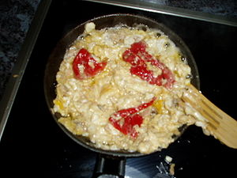

Bazofia
 De: La Frikipedia, la enciclopedia extremadamente seria.
De: La Frikipedia, la enciclopedia extremadamente seria.
| De la serie alimentos y otras vainas:
|
|
|
| Nombre:
|
Bazofia
|
| Tipo de Comida:
|
Plasta
|
| ¿Como se Come?
|
Como se puede
|
| ¿De donde Proviene?
|
Ingalaterra
|
| Ingrediente Basico:
|
Materias comestibles (o no) mezcladas con mantequilla
|
| Forma de Presentación
|
Con mucho morro
|
| Sabor:
|
vomitivo "esótico"
|
Plato típico de Inglaterra.
Preparación
Existen muchas variantes, dependiendo de los ingredientes. Lo único común son los guisantes y el proceso de preparación:
- Se toman los ingredientes y mantequilla.
- Se ponen en un plato con mantequilla como si estuvieran hechos, pero aún están crudos.
- Se meten en la olla exprés, con mantequilla.
- Se saca el plato.
- Se intenta comer.
- Se friega el plato con una escobilla del váter.
Están prohibidos el aceite, el picante y cualquier cosa que pudiera dar sabor.
Existe una variante moderna del proceso, en la que la olla exprés es sustituída por el microondas. Todo se mete en él, hasta el yogur.
Atención! Se ha descubierto una variante Española recíen observada en su capital del Norte pero Un Poco Más P'a la Derecha (tambien llamada Barcelona) de dicha mierda comida (joder, esque es difícil clasificar eso!)
Preparación
 Bazofia a la española a base de huevo,
atún, queso del de lonchas, pimiento(¡ya asado!) y mucha sal y pimienta para enmascarar el sabor a quemado
- Se compran
cocretas croquetas congeladas (se puede hacer con caseras, pero para mejor resultado...)
- Se presume de que uno/a sabe hacerlas (cuando alguien presume de que sabe hacer
cocretas cocretas croquetas, ¡huíd!, no sabe. Nadie puede presumir de eso).
- Se intentan hacer en la sartén (MUY IMPORTANTE HECHARLAS TODAS DE GOLPE).
- Se sacan a duras penas de la sartén (recomendable robar el rasquillo de alguna obra, si vives en Madrid es más fácil).
- Servir a las víctimas en un plato grande y con una sonrisa de satisfacción propia de alguien que no había hecho
cocretas croquetas nunca.
Autor(es):
- Mu
- Doctor grijander
- MesKizo
- Frikih
- Lunasfingo
- Hans
Frikipedia 2005-2016, Licencia
GFDL 1.2 - Extraído por FrikiLeaks